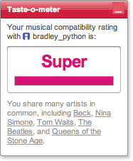

Nifty picture and summary of Music Rainbow at Information Aesthetics. Music Rainbow is a music interface created by Elias Pampalk and Masataka Goto.
Elias and Masataka create really cool music interfaces. There's
more info about Music Rainbow including a video on the MusicRainbow demonstration page.
Monday Nov 06, 2006
It has been 7 years since Napster's popularity exploded - signaling the begining of the digital music revolution and 5 years since the release of the 1st iPod which pushed the digital music revolution out of the dorm rooms and into the mainstrean. Yet - it is still illegal for a UK resident to rip a CD and copy the tracks to their iPod. This makes criminals out of most UK iPod listeners.
The Institute for Public Policy has issued a report called Intellectual Property in a Digital Age that advocates for a number of changes to the British copyright law including calling for a 'right to copy'. The IPP goes on to recommend an IP Framework that emphasizes knowledge as a public resource over the rights of the IP owner. The key features of this model are:
- Policy developed with appeal to the public interest
- Profits of creativity split between reinvestment and public
- Keep the copryight term at 50 years
- Consumer rights actively defended
- Fair dealing trumps DRM
The
IPPR is hoping to influence the current government review of IP laws
with this report. One would hope that the UK government will put
the interests of the society as a whole above those of the music
industry lobby - hopefully it won't be long before it won't be a crime
to put your favorite CD on your iPod.
More in this BBC article. (Thanks Elias!)
Sunday Nov 05, 2006
The social news site digg has been having some growing pains lately. Since Digg is so popular, getting a story on the front page of Digg is a big deal - such a big deal in fact, that there is an incentive to game the system - to influence digg through organized voting to get a story dugg to the front page or buried where it will never be seen again. Digg has been fighting back, tweaking their promotion algorithm, looking for digging patterns that will point to organized digging and banning the shills. But everytime Digg updates their algorithm they end up pissing off some of their users - many of them long time contributors. Recently, a group of hardcore diggers have put together an open letter to Kevin Rose - to object to the latest set of algorithm tweaks. Digg isn't the first social site that has had these problems. Google has been fighting against search engine optimizers for years - whole industries have surfaced to help websites get good placement in Google.
It won't be long before the same sort of thing starts to happen in the music discovery world as well. Nearly all of the music discovery sites (for example last.fm, Qloud, iLike) rely on social data and user behavior to track and recommend music. Just like Digg, these sites are easily gamed. It won't be long before there's an economic incentive in gaming these music sites - using them to promote or bury songs. And when that happens, people will get bad music recommendations.
So what should you do if you are building a
social recommender for music and want to protect your system from
gaming? One place to start is by reading the papers by Bamshad Mobasher on topic.
Bamshad spends a lot of time thinking about how social systems can be
attacked and how to construct defenses against such attacks. Of
course, if your recommender doesn't rely on social systems but also uses
other info (such as content) it is less vulernable too.
Excellent interview in The Register with Peter Jenner (manager of the Clash and Pink Floyd), about the future (or lack there of) of DRM. Peter is pushing for a blanket licensing model that will make DRM obsolete. Music will flow like water. More about this idea at the Music Tank and the SoundBytes Conference. (via slashdot).
Saturday Nov 04, 2006
The folks at Echo Nest have started blogging
about what is going on inside the nest. Among other things on the
blog there's a cool video of showing a PSP being used as an mp3 player
that auto aligns music tracks to get that seemless song
transition. There's also this little teaser for their API.
According to the blog .. If you’ve got your own great idea for the Echo Nest brain and might be
able to pull it off, let us know at founders at echonest.com.
Of course you have to have a pretty good idea about what the brain can
do and Brian and Tristan are pretty quiet about that ... as I've said
before, I'm expecting to see some good things from them. (via mediascri.be)
There's a new version of roller that has lots of nifty new features
including an improved rich text editor. One thing to watch out for
... they have reversed the ordering of the two main editing
areas. In the previous version the 'summary' edit area was on top
of the 'content' area, but in this latest version they have switched the
ordering so that the 'content' area is on top. I didn't notice
this and so my most recent two posts were 'summary' posts. BTW,
the new editor is very nice. It has a full-window mode that makes so
much nicer to type in longer posts. (Thanks to Jon and Steve for
asking about my posts).
Friday Nov 03, 2006
Rick Segal is taking the VC tour with Matt Dunn of MusicIP and is offering some insights into the music VC process on his blog The Post Money Value. A choice quote from one of the VCs:
Yeah, but all this music downloading is just a fad and nobody actually spends anytime searching for music, they just listen to the radio station and that's it. I don't own one of the silly things and I can't really think of many people that do.
It's interesting to follow along.
Discovering the mood of a song is important for may reasons. Mood can be used to help make good playlists, to help classify music, and to make sure that a good party doesn't go bad.
The mood of a song can be derived from the audio, or from the lyrics. The Lyricator derives the mood from the lyrics. The Lyricator uses the PAD Emotion scale to
position a song's lyrics in a 3 Dimensional mood space. The three
dimensions are pleasure-displeasure, arousal-nonarousal, and
dominance-submissiveness axes. The Lyricator calcuates the PAD for each
song and then uses this to classify the song as engaging, soothing, boring or annoying/angry.
The Lyricator was written by Owen Meyers at the Mit Media lab. It is written in Python and the source/executable can be downloaded from Owen's Lyricator page.
Here are some lyricator results
| Song Title | Pleasure | Arousal | Dominance | Classification |
| Eric Clapton's Tears in Heaven | 0.16 | 0.02 | 0.07 | Engaging |
| Beatle's Come Together | 0.07 | 0.007 | 0.03 | Boring |
| Mama's & the Papa's California Dreamin | .09 | -.02 | .02 | Soothing |
| Christina Aguilera Beautiful | .12 | .02 | .05 | Engaging |
| Coolio Gangsta's Paradise | .075 | .023 | .032 | Angry |
| John Lennon Imagine | .223 | .058 | .115 | Engaging |
| Sarah Brightman Everything's Alright | .07 | .005 | .02 | Boring |
| Bob Marley I Shot The Sheriff | .06 | .005 | .022 | Boring |
| Death Left To Die | .042 | .025 | .0034 | Angry |
| Janet Jackson The Pleasure Principle | .188 | .029 | .069 | Engaging |
Wednesday Nov 01, 2006
- Flash-based player - no need for a download and install to take advantage of streaming music - a bonus this means that last.fm streaming now works on Solaris machines. <w00t!>
- Concert notification - find out what concerts and events are happening in your area (or in your friends area).
- Free Downloads - 100,000 free tracks to download (I can hear the sound of thousands of MIR researchers pointing their wget script at last.fm even as I write this).
- taste-o-meter - very similar to iLike's
user-compatible rating system. Now when you browse a user at
last.fm you get to see how well their music taste agrees with yours:
last.fm also seems to have scattered little improvements throughout the site - more album art, better layouts, better integration of their social featurs (such as journals).
I did notice that the event system is a little buggy. I typed in 'Boston' for my city and I was offered a choice of Boston in Alabama, Arkansas, Connecticut, Indiana and Kentucky, but no Boston Massachusetts. When I put in Nashua NH, all was well, and I learned that Death Cab for Cutie will be in Boston tommorrow night and The Who will be in Boston on December 2. Pretty cool!
last.fm is one of my favorite social music sites. It's good to see they are keeping things fresh.
Tuesday Oct 31, 2006
MySpace announced yesterday that they will start using Gracenote's
audio fingerprinting to make sure that Myspace users are not uploading
copyrighted music. According to a Macworld article:
Now I wonder how well this will actually work. Audio Fingerprinting is designed to be insensitive to most 'naturally occuring' music distortions such as encoding artifacts, noise and changes in equalization, but I don't know of any audio fingerprinting system that will work well when faced with people who are actively trying to evade detection. It won't be too difficult for a properly motivated MySpace user to find a set of filters that can be applied to any song that will allow the song to get a unique fingerprint, without actually changing how the song sounds. A quick trip through Audacity to apply a micro-pitch change, a little equalization, and perhaps a slight tempo change will probably do the trick. Of course, the folks over at Gracenote are pretty smart and may be able to adapt to evasions, but this will no doubt lead to even more sophisticated evasions. In the end I don't think it is possible to create a fingerprinting system that will be able to deal with people who are actively evading the system. In the end, the evaders will win.
MySpace will review all music audio recordings uploaded by community
members to their profiles, identifies that which is copyrighted, and
blocks the uploading of such music as appropriate.
Now I wonder how well this will actually work. Audio Fingerprinting is designed to be insensitive to most 'naturally occuring' music distortions such as encoding artifacts, noise and changes in equalization, but I don't know of any audio fingerprinting system that will work well when faced with people who are actively trying to evade detection. It won't be too difficult for a properly motivated MySpace user to find a set of filters that can be applied to any song that will allow the song to get a unique fingerprint, without actually changing how the song sounds. A quick trip through Audacity to apply a micro-pitch change, a little equalization, and perhaps a slight tempo change will probably do the trick. Of course, the folks over at Gracenote are pretty smart and may be able to adapt to evasions, but this will no doubt lead to even more sophisticated evasions. In the end I don't think it is possible to create a fingerprinting system that will be able to deal with people who are actively evading the system. In the end, the evaders will win.
Saturday Oct 28, 2006
This morning Chris and I are off to Poultney Vermont to visit Green
Mountain college. Poultney is a small town (all towns in Vermont are
small) in the western central part of the state. Poultney is not too far
from Manchester Vt where one can find the Northshire Book Store, my favorite independent book store. It's the kind of store with nooks and crannies filled with interesting shelves of books.
Friday Oct 27, 2006
Last month I wrote about how social systems can be easily gamed by organized groups. A group can coordinate their efforts to affect a social recommender.
An anti-DRM activist group is now tagging products on Amazon with the tag "defectivebydesign" using Amazon's social tagging system. Leading the pack right now are the Zune and the IPod. Via BoingBoing.
An anti-DRM activist group is now tagging products on Amazon with the tag "defectivebydesign" using Amazon's social tagging system. Leading the pack right now are the Zune and the IPod. Via BoingBoing.
Renowned data visualization expert, Edward Tufte, maintains a forum called 'ASK E.T.'
were Infovis and graphic design folk can ask questions and discuss
various visualization questions. This month there's an interesting thread on visualizing music, especially on visualizing music structure.
This blog copyright 2010 by plamere